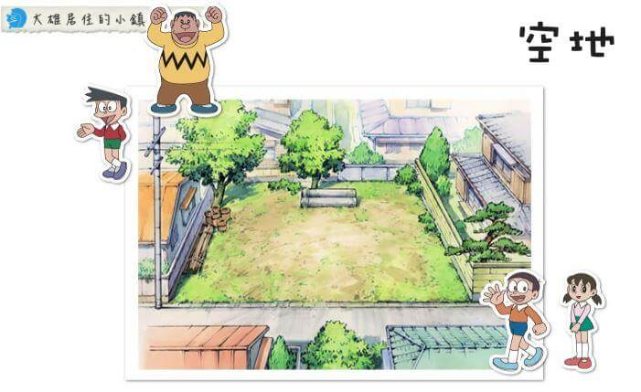

空地 |
|  |
概述空地最著名的標誌就是那 3 根以三角形的模樣疊在一起的土管。這裡是大雄他們最常聚在一起玩樂的地方。無論是打棒球、聊天、睡午覺甚至是辦演唱會，都會在這裡熱鬧的展開。當大雄等人其中某個人無聊時，也都會來這裡走走，因為去空地一定可以找的到人說話。這裡也是胖虎的「胖虎棒球隊」的練習場，大家常在這裡打棒球，但因空間稍小，球常會打破人家（大多是神成先生家，因為空地隔壁就是神成先生家。因為他經常發怒，所以又被稱為雷公）的玻璃。另外，大雄也喜歡躺在缸管上睡覺。 其實，空地是有地主的，也曾經有過要開發的計劃，不過不知道為什麼還是閒置到現在。空地經常成為《哆啦A夢》故事的舞台，還曾經發生發現未爆彈、鯊魚出沒等大事。 |